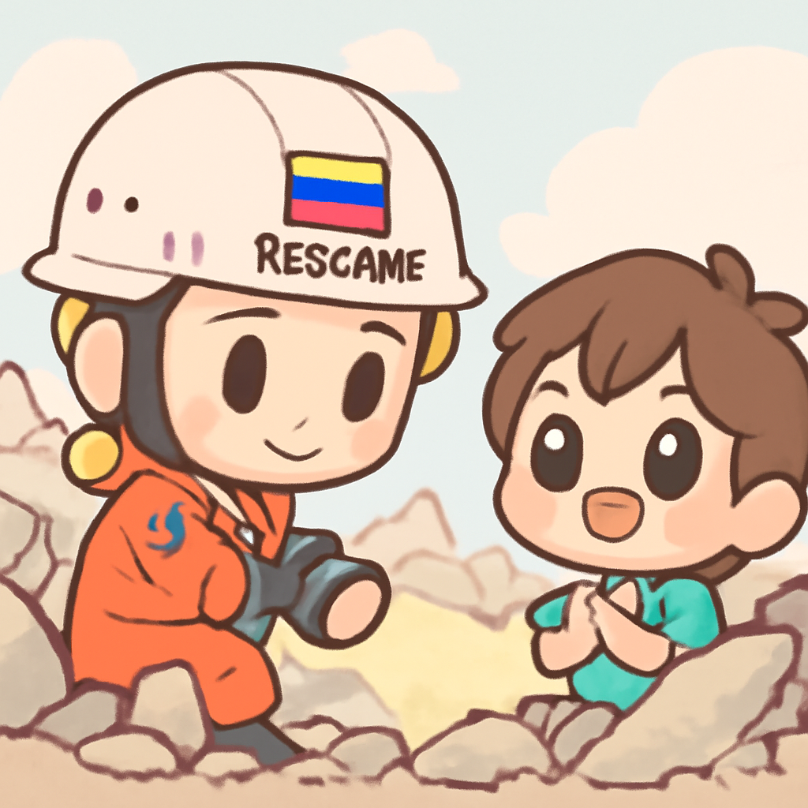

其一 · 委內瑞拉 · 震後救援持續中
委內瑞拉發生雙重地震，救援艱辛進行。

在委內瑞拉，雙重地震過後，當地救援人員已經持續工作超過三天，努力尋找被困者。儘管有些希望依然存在，但救援行動面臨混亂和延誤，讓人擔心生還者的機會越來越小。這不僅是對當地社區的挑戰，也讓國際社會關注到這場人道危機的急迫性。希望不會讓人失望，否則大家可能得考慮開發一種新的「快遞」救援方式。
🔗 原始新聞 ↗
2026-06-29 · 以古觀今，以笑抗愁
委內瑞拉發生雙重地震，救援艱辛進行。

在委內瑞拉，雙重地震過後，當地救援人員已經持續工作超過三天，努力尋找被困者。儘管有些希望依然存在，但救援行動面臨混亂和延誤，讓人擔心生還者的機會越來越小。這不僅是對當地社區的挑戰，也讓國際社會關注到這場人道危機的急迫性。希望不會讓人失望，否則大家可能得考慮開發一種新的「快遞」救援方式。
🔗 原始新聞 ↗
美國和伊朗互相指責違反停火協議，局勢緊張。
在中東，美國和伊朗的局勢不斷升溫，雙方互相發動攻擊，指控對方違反停火協議。隨著衝突持續，伊朗甚至宣稱已經對美國在科威特和巴林的設施進行了報復性攻擊。這場衝突可能會對地區的穩定造成深遠影響，讓人不禁想問：這兩位老兄到底是為了什麼而打架？
🔗 原始新聞 ↗
德國達到41.7度，熱浪帶來健康危機。
隨著德國氣溫飆升至41.7度，世界衛生組織報告指出，這場熱浪已造成約1300人喪生。WHO的首席Tedros警告，歐洲對於這種極端高溫的準備不足，這讓人對未來的氣候變化更加擔憂。似乎我們不僅要準備防曬霜，還得考慮裝空調的家庭聚會了。
🔗 原始新聞 ↗
法國一架飛行蹦極的飛機墜毀，所有乘客遇難。
在法國，週日前往蹦極的飛機不幸墜毀，造成包括五名初學者在內的11人全部遇難。事故發生後，當地官員迅速展開調查，這場悲劇讓人心痛，尤其是對於那些懷著冒險夢想的年輕人來說。希望未來在表演極限運動之前，先讓飛機檢查一下，不然就真的成了「空中蹦極」了。
🔗 原始新聞 ↗
沙烏地阿拉伯一架直升機墜毀，14人死亡。
在沙烏地阿拉伯，一架直升機在靠近主要油田的地區墜毀，造成14人不幸遇難。這架直升機隸屬於國有石油公司阿美，事故原因仍在調查中。這起事件不僅引發了對航空安全的討論，還讓我們再次意識到，飛行的安全真的不能掉以輕心，否則下次可能得考慮改搭火箭。
🔗 原始新聞 ↗